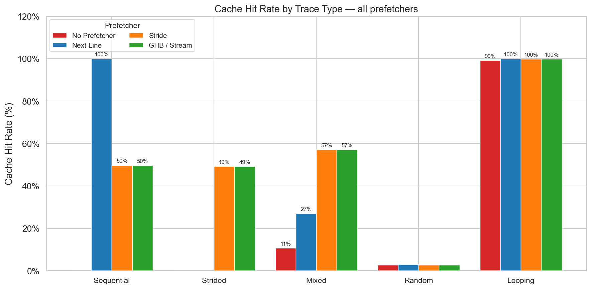
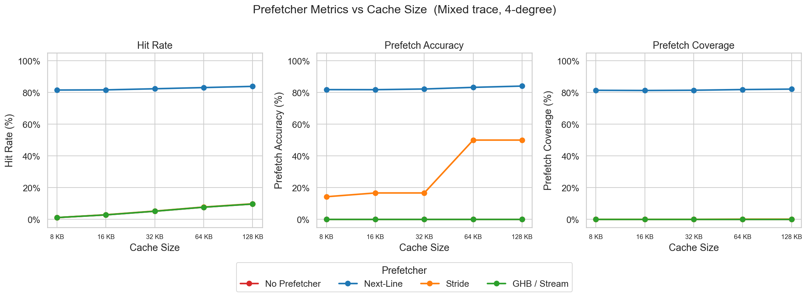
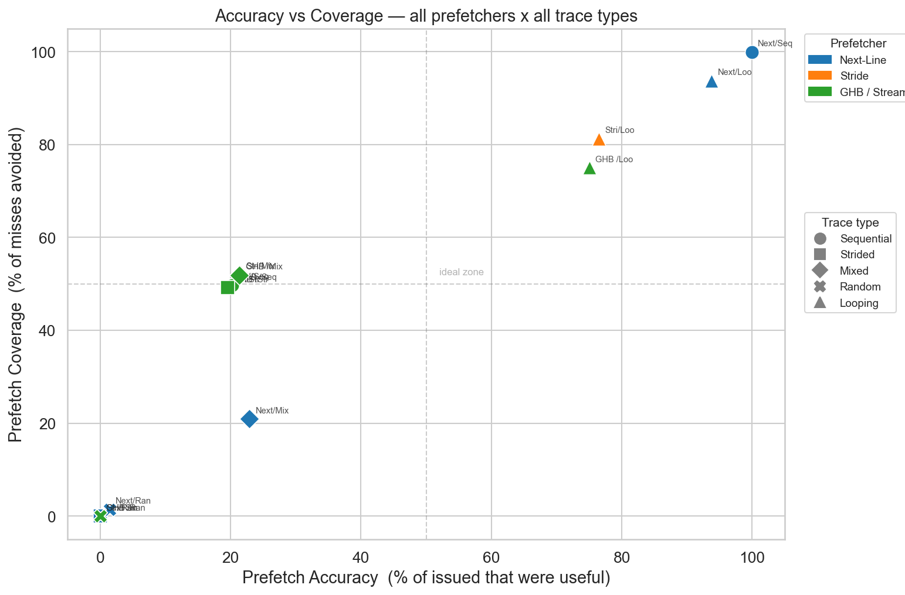
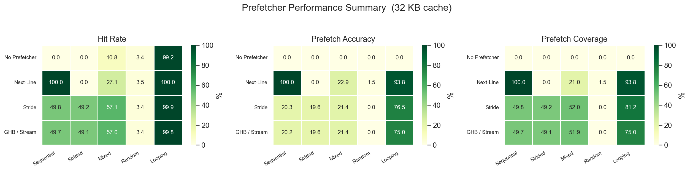
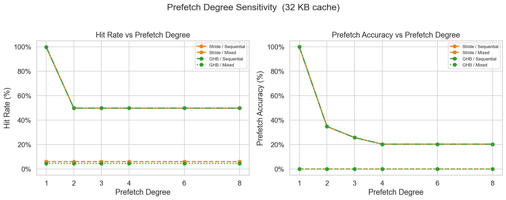

Simulation, comparison, and analysis of cache prefetching strategies
Baseline. Zero prefetching. Every access is a potential cache miss.
BaselineAfter each access fetches the immediately next cache line (addr + 64).
Best for sequential streams. Fails on strides > 64 B.
Simple · Low costTracks per-PC access history. Detects repeated stride, prefetches N lines ahead.
Confirm threshold = 2. Works for any regular stride pattern.
PC-indexed · degree=4Global History Buffer — delta correlation indexed by PC. Handles multiple concurrent memory streams.
Lookback=3, history=256 entries.
Multi-stream · Advanced

Next-Line dominates on Mixed trace at all cache sizes (82% hit rate, ~82% accuracy). Stride accuracy jumps to 50% only at 64 KB+ — needs large cache to "stage" early prefetches.

Top-right = ideal zone. Next-Line on Sequential (100%/100%) is closest to ideal. All prefetchers collapse on Random (bottom-left). Stride & GHB cluster at ~20% accuracy / ~50% coverage for predictable traces.

| Prefetcher | Sequential | Strided | Mixed | Random | Looping |
|---|---|---|---|---|---|
| No Prefetcher | 0.0% | 0.0% | 10.8% | 3.4% | 99.2% |
| Next-Line | 100% | 0.0% | 27.1% | 3.5% | 100% |
| Stride | 49.8% | 49.2% | 57.1% | 3.4% | 99.9% |
| GHB / Stream | 49.7% | 49.1% | 57.0% | 3.4% | 99.8% |

Degree=1 gives best accuracy (100%), but hit rate drops 50% at degree≥2 because the cache evicts pre-fetched lines before they're used on the Mixed trace.
Used for architecture design, prefetcher implementation, experiment scripting, visualization, and presentation assembly. All output reviewed and understood by the team before submission.
📄 Full AI usage log: AI_USAGE.md — Google Doc
My Prompts (Person 5 — Presenter)
Team Contributions
Trace format, loader, harness
Next-Line & Stride prefetchers
Metrics, experiments, plots
GHB / Stream prefetcher
Slides, README, AI_USAGE.md, demo